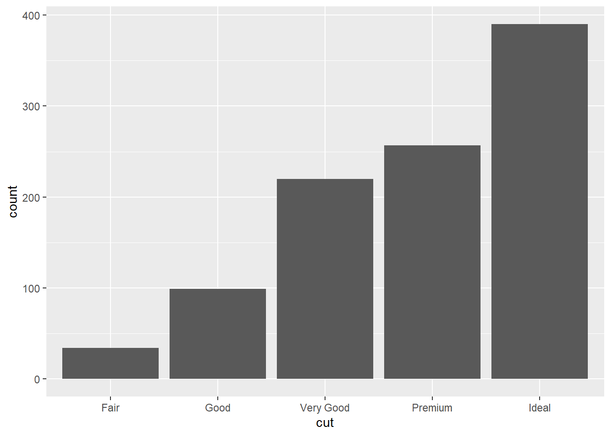
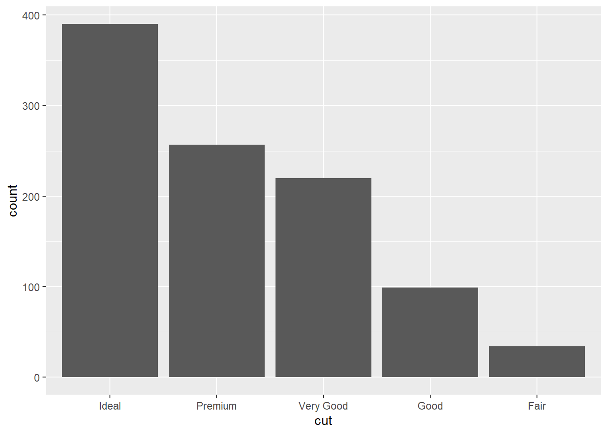
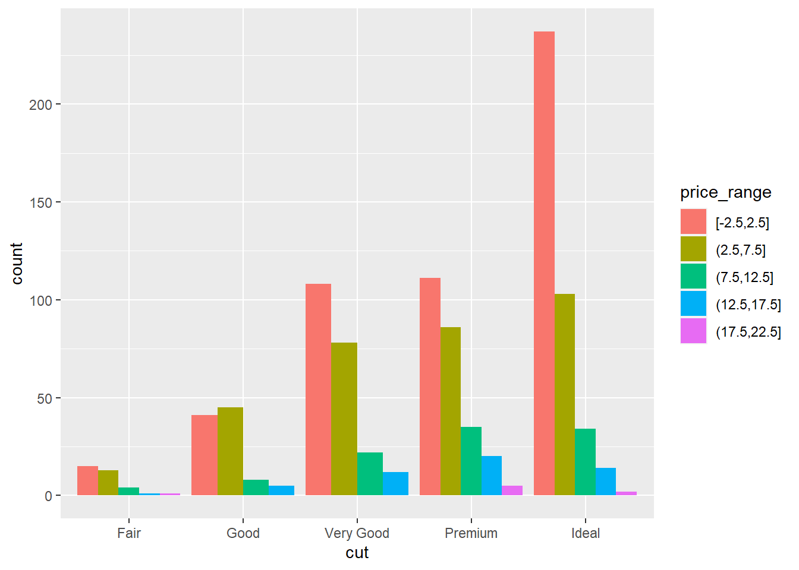
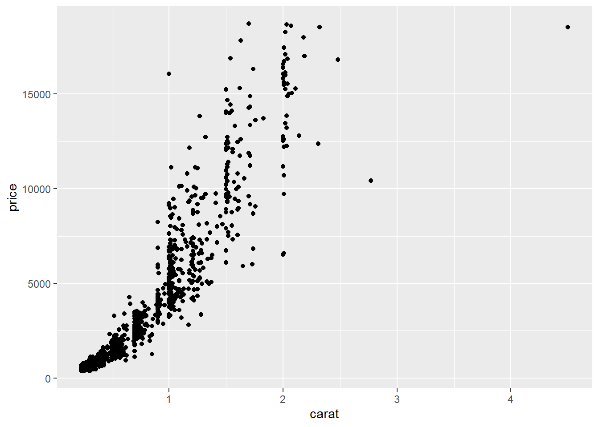
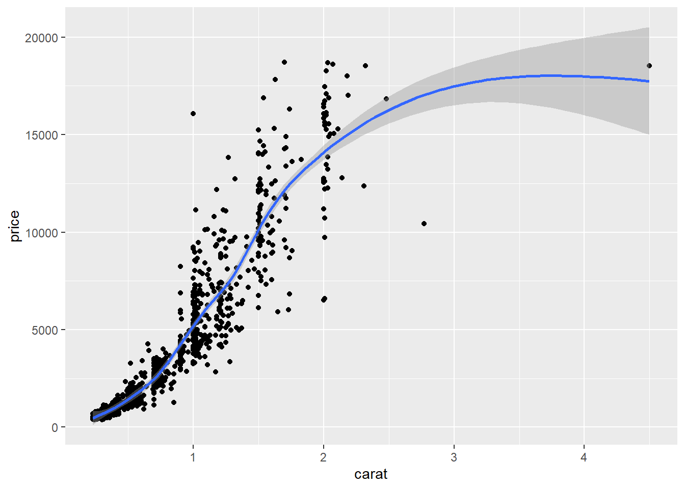
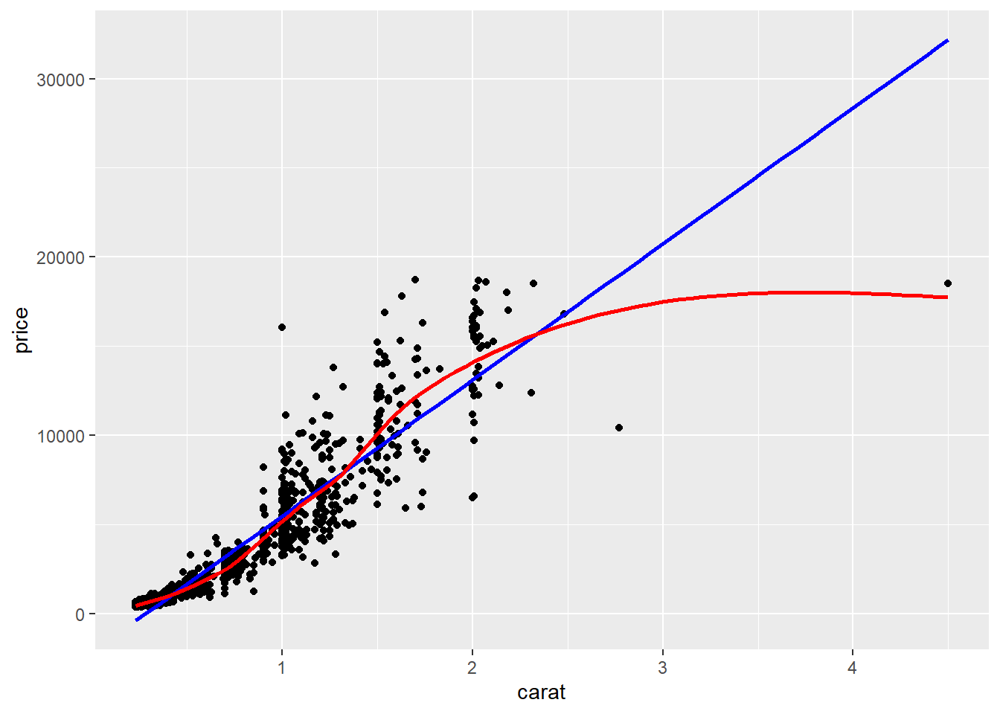
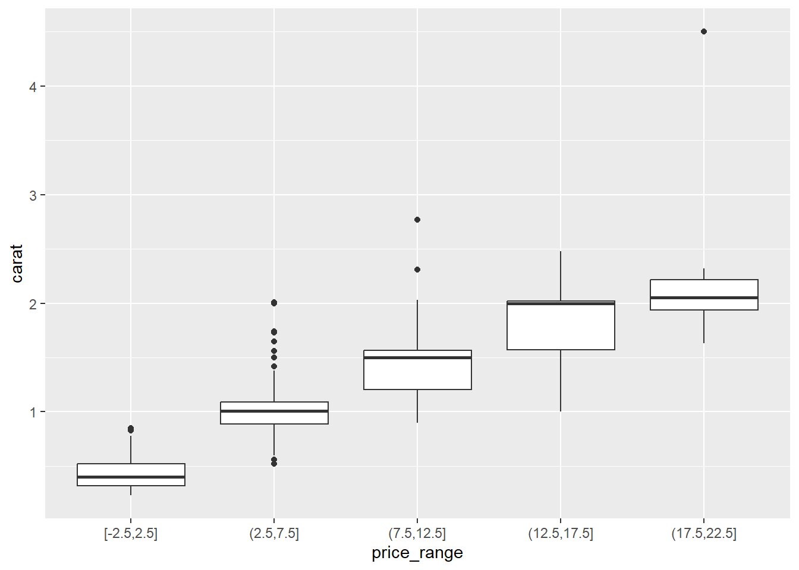

library(ggplot2)
diamonds <- ggplot2::diamonds
set.seed(1410) # Make the sample reproducible
dsmall <- diamonds[sample(nrow(diamonds), 1000), ]7 Creating Graphics
Visualizing your data is hands down the most important thing you can learn to do. Seeing is critical to understanding. There are two audiences in mind when creating data visualizations:
- For your eyes only (FYEO). These are quick and dirty plots, without annotation. Meant to be looked at once or twice.
- To share with others. These need to completely stand on their own. Axes labels, titles, colors as needed, possibly captions.
You will see, and slowly learn, how to add these annotations and how to clean up your graphics to make them sharable. Functions inside the ggplot2 package automatically does a lot of this work for you. Remember this package has to be loaded prior to being able to access the functions within.
7.0.1 Learning Objectives
After completing this lesson students will be able to create basic data visualizations using both base R and the ggplot2 package.
7.0.1.0.1 Prior to this lesson learners should
- Download the [07_plots_notes.Rmd] R markdown file and save into your
Math130/notesfolder.
7.1 The syntax of ggplot
The reason we use the functions in ggplot2 is for consistency in the structure of it’s arguments. Here is a bare bones generic plotting function:
ggplot(data, aes(x=x, y=y, col=col, fill=fill, group=group)) + geom_THING() 7.1.1 Required arguments
data: What data set is this plot using? This is ALWAYS the first argument.aes(): This is the aesthetics of the plot. What variable is on the x, and what is on the y? Do you want to color by another variable, perhaps fill some box by the value of another variable, or group by a variable.geom_THING(): Every plot has to have a geometry. What is the shape of the thing you want to plot? Do you want to plot point? Usegeom_points(). Want to connect those points with a line? Usegeom_lines(). We will see many varieties in this lab.
7.1.2 The Diamonds Data
We will use a subset of the diamonds dataset that comes with the ggplot2 package. This dataset contains the prices and other attributes of almost 54,000 diamonds. Review ?diamonds to learn about the variables we will be using.
7.2 Univariate (One Variable) (Video)
7.2.1 Categorical variables
Both Nominal and Ordinal data types can be visualized using the same methods: tables, barcharts and pie charts.
7.2.1.1 Tables
Tables are the most common way to get summary statistics of a categorical variable. The table() function produces a frequency table, where each entry represents the number of records in the data set holding the corresponding labeled value.
table(dsmall$cut)
Fair Good Very Good Premium Ideal
34 99 220 257 390 There are 34 Fair quality diamonds, 99 Good quality diamonds, and 390 Ideal quality diamonds in this sample.
7.2.1.2 Barcharts / Barplots
A Barchart or barplot takes these frequencies, and draws bars along the X-axis where the height of the bars is determined by the frequencies seen in the table.
The geometry needed to draw a barchart in ggplot is geom_bar().
ggplot(dsmall, aes(x=cut)) + geom_bar()
We can reorder these levels on the fly so they are being shown in decreasing frequency using the fct_infreq function from the forcats library.
ggplot(dsmall, aes(x=forcats::fct_infreq(cut))) + geom_bar() + xlab("cut")
Special note. The
::notation is a shortcut to use a function from inside a package without actually loading the entire package. This can be useful when you’re only using a function once or twice in an analysis.
7.2.2 Continuous variable
The price, carat, and depth of the diamonds are all continuous variables. Let’s explore the distribution of price.
7.2.2.1 Histograms
Rather than showing the value of each observation, we prefer to think of the value as belonging to a bin. The height of the bars in a histogram display the frequency of values that fall into those of those bins.
Since the x-axis is continuous the bars touch. This is unlike the barchart that has a categorical x-axis, and vertical bars that are separated.
ggplot(dsmall, aes(x=price)) + geom_histogram()
7.2.2.2 Density plots
To get a better idea of the true shape of the distribution we can “smooth” out the bins and create what’s called a density plot or curve. Notice that the shape of this distribution curve is much… “wigglier” than the histogram may have implied.
ggplot(dsmall, aes(x=price)) + geom_density()
7.2.2.3 Histograms + density
Often it is more helpful to have the density (or kernel density) plot on top of a histogram plot.
- The syntax starts the same: we’ll add a new geom,
geom_densityand color the line blue. - Then we add the histogram geom using
geom_histogrambut must specify that the y axis should be on the density, not frequency, scale.- Note that this has to go inside the aesthetic statement
aes().
- Note that this has to go inside the aesthetic statement
- I’m also going to get rid of the fill by using
NAso the colored bars don’t plot over the density line.
ggplot(dsmall, aes(x=price)) + geom_density(col="blue") +
geom_histogram(aes(y=..density..), colour="black", fill=NA)
7.2.2.4 Boxplots
Another very common way to visualize the distribution of a continuous variable is using a boxplot. Boxplots are useful for quickly identifying where the bulk of your data lie. R specifically draws a “modified” boxplot where values that are considered outliers are plotted as dots.
7.2.2.4.1 base
boxplot(dsmall$price)
Notice that the only axis labeled is the y=axis. Like a dotplot the x axis, or “width”, of the boxplot is meaningless here. We can make the axis more readable by flipping the plot on its side.
boxplot(dsmall$price, horizontal = TRUE, main="Distribution of diamond prices", xlab="Dollars")
Horizontal is a bit easier to read in my opinion.
What about ggplot? ggplot doesn’t really like to do univariate boxplots. You’ll see those later when we create one boxplot per group.
7.2.2.5 New variable
Before we move on, I want to see price displayed as ranges of 5,000 instead of a continuous measure from 0 to 20,000. I will us the cut_width function to create a new categorical variable here called price_range. See this page for this, and other functions in ggplot that discretize numeric data into categorical.
dsmall$price_range <- cut_width(dsmall$price/1000, width=5)Notice I also divided price by 1000, so 2.5 means 2500. Now that price_range is a categorical variable, I can create a barchart to visualize the frequencies of each bin.
ggplot(dsmall, aes(x=price_range)) + geom_bar()
7.3 Bivariate (Two Variables) (Video)
7.3.1 Categorical v. Categorical
7.3.1.1 Two-way Tables
Cross-tabs, cross-tabulations and two-way tables (all the same thing, different names) can be created by using the table() function.
7.3.1.2 Frequency table
The frequency table is constructed using the table() function.
table(dsmall$cut, dsmall$price_range)
[-2.5,2.5] (2.5,7.5] (7.5,12.5] (12.5,17.5] (17.5,22.5]
Fair 15 13 4 1 1
Good 41 45 8 5 0
Very Good 108 78 22 12 0
Premium 111 86 35 20 5
Ideal 237 103 34 14 2There are 4 Fair diamonds that cost between 7.5 and 12.5 thousand dollars, and 103 Ideal quality diamonds that cost between 2.5 and 7.5k.
7.3.1.2.1 Cell proportions
Wrapping prop.table() around a table gives you the cell proportions.
table(dsmall$cut, dsmall$price_range) %>% prop.table()
[-2.5,2.5] (2.5,7.5] (7.5,12.5] (12.5,17.5] (17.5,22.5]
Fair 0.015 0.013 0.004 0.001 0.001
Good 0.041 0.045 0.008 0.005 0.000
Very Good 0.108 0.078 0.022 0.012 0.000
Premium 0.111 0.086 0.035 0.020 0.005
Ideal 0.237 0.103 0.034 0.014 0.002- 1.5% of all diamonds are Fair cut and cost under 2.5k.
- 0.5% of all diamonds are Premium cut and cost over 17.5k
7.3.1.2.2 Row proportions
To get the row proportions, specify margin=1. The percentages now add up to 1 across the rows.
table(dsmall$cut, dsmall$price_range) %>% prop.table(margin=1) %>% round(3)
[-2.5,2.5] (2.5,7.5] (7.5,12.5] (12.5,17.5] (17.5,22.5]
Fair 0.441 0.382 0.118 0.029 0.029
Good 0.414 0.455 0.081 0.051 0.000
Very Good 0.491 0.355 0.100 0.055 0.000
Premium 0.432 0.335 0.136 0.078 0.019
Ideal 0.608 0.264 0.087 0.036 0.005- 44.1% of Fair quality diamonds cost under 2.5k
- 1.9% of Premium quality diamonds cost over 17.5k.
7.3.1.2.3 Column proportions
To get the column proportions, you specify margin=2. The percentages now add up to 1 down the columns.
table(dsmall$cut, dsmall$price_range) %>% prop.table(margin=2) %>% round(3)
[-2.5,2.5] (2.5,7.5] (7.5,12.5] (12.5,17.5] (17.5,22.5]
Fair 0.029 0.040 0.039 0.019 0.125
Good 0.080 0.138 0.078 0.096 0.000
Very Good 0.211 0.240 0.214 0.231 0.000
Premium 0.217 0.265 0.340 0.385 0.625
Ideal 0.463 0.317 0.330 0.269 0.250- 8% of diamonds that cost under 2.5k are of Good quality
- 25% of diamonds that cost over 17.5k are Ideal quality
7.3.1.3 Grouped bar charts
To compare proportions of one categorical variable within the same level of another, is to use grouped barcharts.
Plot the cut on the x axis, but then fill using the second categorical variable. This has the effect of visualizing the row percents from the table above. Here it is the percent of price_range, within each type of cut.
ggplot(dsmall, aes(x=cut, fill=price_range)) + geom_bar()The default is a stacked barchart. So add the argument position=dodge inside the geom_bar layer to put the bars side by side.
ggplot(dsmall, aes(x=cut, fill=price_range)) + geom_bar(position = "dodge")
And look, an automatic legend. What if I wanted to better compare cut within price range? This is the column percentages. Just switch which variable is the x axis and which one is used to fill the colors!
ggplot(dsmall, aes(x=price_range, fill=cut)) + geom_bar(position = "dodge")And this easy change is why we love ggplot2.
7.3.2 Continuous v. Continuous
7.3.2.1 Scatterplot
The most common method of visualizing the relationship between two continuous variables is by using a scatterplot.
With ggplot we specify both the x and y variables, and add a point.
ggplot(dsmall, aes(x=carat, y=price)) + geom_point()
7.3.2.1.1 Adding lines to the scatterplots
Two most common trend lines added to a scatterplots are the “best fit” straight line and the “lowess” smoother line. This is done by adding a geom_smooth() layer.
ggplot(dsmall, aes(x=carat, y=price)) + geom_point() + geom_smooth() 
Here the point-wise confidence interval for this lowess line is shown in grey. If you want to turn the confidence interval off, use se=FALSE. Also notice that the smoothing geom uses a different function or window than the lowess function used in base graphics.
Here it is again using the ggplot plotting function and adding another geom_smooth() layer for the lm (linear model) line in blue, and the lowess line (by not specifying a method) in red.
ggplot(dsmall, aes(x=carat, y=price)) + geom_point() +
geom_smooth(se=FALSE, method="lm", color="blue") +
geom_smooth(se=FALSE, color="red")
7.3.3 Continuous v. Categorical
Create an appropriate plot for a continuous variable, and plot it for each level of the categorical variable by shading the plots or coloring the lines depending on the group.
7.3.3.1 Overlaid density plots
You could fill the density curves depending on the group, but then it’s hard to see overlap.
ggplot(dsmall, aes(x=depth, fill=cut)) + geom_density()We can adjust the transparency of the density curve by applying a value to alpha inside the density layer. Alpha is a measure of transparency, from 0=clear to 1=opaque.
ggplot(dsmall, aes(x=depth, fill=cut)) + geom_density(alpha=.3)
Now we can see that there are some premium cut diamonds with depths around 62. This peak was hidden from us before.
You could also just color the lines and leave the fill alone.
ggplot(dsmall, aes(x=depth, color=cut)) + geom_density()We won’t talk about changing colors or the background in this lab, but the yellow is pretty hard to read.
7.3.3.2 Grouped boxplots
ggplot is happy to do grouped boxplots. Put the continuous variable on the y, categorical on the x.
ggplot(dsmall, aes(x=price_range, y=carat)) + geom_boxplot()
7.3.3.2.1 Adding violins to the boxplot
A violin plot is like a density plot, turned on its side, and reflected around the axis for symmetry purposes. Overlaying a boxplot and a violin plot serves a similar purpose to Histograms + Density plots. It shows outliers, the location of most the data, and better shows the shape/skew of the distribution. Let’s also fill the geometries with the same color as what is on the x-axis. Not 100% needed but nice for display sometimes.
ggplot(dsmall, aes(x=price_range, y=carat, fill=price_range)) +
geom_violin(alpha=.1) +
geom_boxplot(alpha=.5, width=.2)